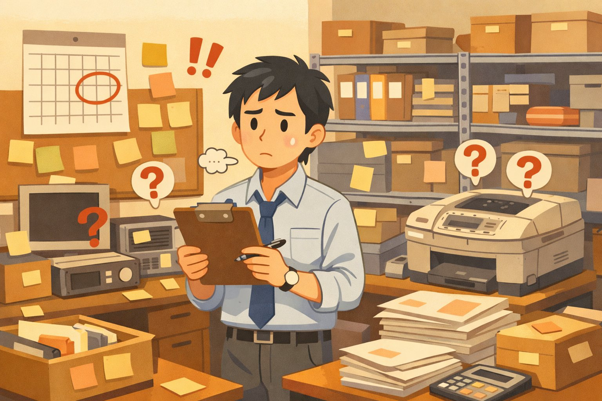
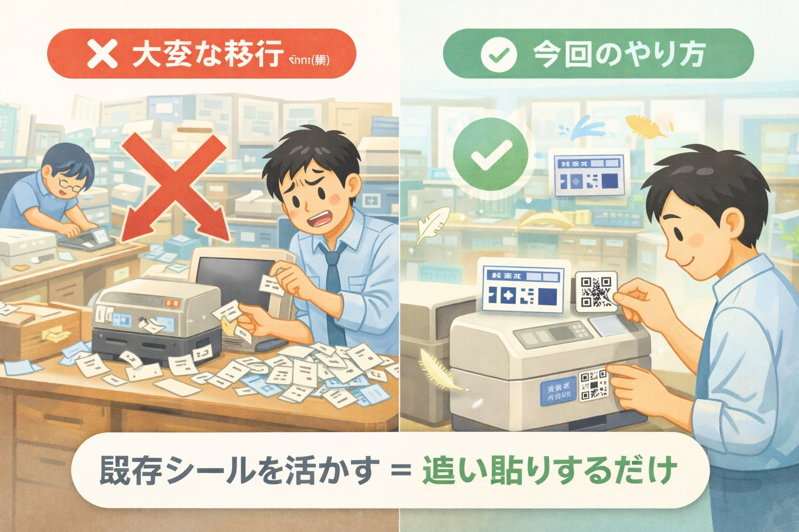

現在の管理シールはそのまま残します。
QRコードは「追加で貼るだけ」。目視での確認・既存の運用は今まで通り。
スマホやiPadで「ピッ」と読み取れば、棚卸しや備品情報の確認が一瞬で終わります。
1. 今起きている困りごと

年次棚卸し、シールの有無、備品の所在…頭を悩ませる作業
❌ 年1回の棚卸しで、各課にかなりの手間がかかる
❌ シール貼付や写真添付が徹底されず、ヌケモレが発生
❌ どの課で使われていない備品があるか、把握しづらい
❌ 古い備品で、シールがない・剥がれているものがある
2. QRコードで何が変わるか
QRをピッ → 情報が表示 → 「確認」ボタンで棚卸し完了
✅ 読み取るだけで、その備品の情報がすぐ見える
✅ 「確認」ボタンを押すだけで棚卸し完了。チェック作業が激減
✅ 確認されなかった備品が自動でリスト化される(=ヌケモレが見える化)
✅ 「使っていない備品」を他の課が見て、貰い受けることができる
3. 実際の使用イメージ（動かせます）
👇 画面をタップして動きを体験してみてください
最近確認した備品
複合機 MX-3650
事務室 / 管理番号: A-0123
✓ 確認済み
プロジェクター EB-1795F
第2会議室 / 管理番号: A-0456
○ 未確認
🖨️
複合機 MX-3650
管理番号A-0123
設置場所事務室
管理課管財課
購入日2022/04/15
状態使用中
✓
確認しました！
最終棚卸日が
自動で更新されました
※ 実際のアプリは他課で導入実績のある Google AppSheet で構築します
4. 仕組みはこうなります
5. 使うシステム
大学で既に使っている Google Workspace for Education の機能だけで実現できます。追加費用なし。新しいソフトの導入も不要。
アプリらしい見た目は、他課で導入実績のある AppSheet を使います。データ本体はGoogleスプレッドシートなので、万が一の時も従来の方法で運用継続が可能です。
| 使う機能 | 役割 | 追加費用 |
|---|
| Google スプレッドシート | 備品一覧(データベース本体) | 無料 |
| Google ドライブ | 備品写真の保管 | 無料 |
| AppSheet | スマホ/iPad用の見やすい画面 | 無料 |
| QRコード生成 | スプレッドシート内で自動生成 | 無料 |
6. 移行コストは限りなく小さい
🎯 この提案で一番お伝えしたいこと
既存のシール・既存の運用をそのまま残したまま導入できます。管理番号も、目視確認の習慣も、今まで通り。
💡 既存シールを残すので、一気に全部やる必要はありません。
新規購入品から順次QR化していき、棚卸しのタイミングで古い備品にも追加貼付していけばOKです。
パイロット運用から始めて、うまく回る見込みが立ってから段階的に広げます。失敗しても元の運用に戻るだけ。

✕ 大変な移行
✓ 今回のやり方
既存シールを活かす = 追い貼りするだけ
7. 備品一覧に持たせる情報
- 管理番号 (既存のものをそのまま使用)
- 品名・型番
- 設置場所・管理している課
- 購入日・購入金額
- 備品の写真
- 状態 (使用中 / 遊休 / 廃棄予定)
- 最終棚卸日・棚卸した人 (自動記録)
8. 遊休備品の"お下がり"活用
状態を遊休にした備品だけを表示する「お下がりリスト」を作れます。他の課の職員が閲覧して、「うちで使いたい」と申し出られる仕組み。
結果: 不要な購入が減り、廃棄コストも下がります。
9. 導入ステップ(想定)
| ステップ | 内容 | 所要 |
|---|
| ① | スプレッドシート・AppSheetの設計・試作 | 1〜2週 |
| ② | 1つの課でパイロット運用 | 2〜4週 |
| ③ | フィードバック反映・改善 | 1〜2週 |
| ④ | 全課展開・QRシール順次貼付 | 数ヶ月かけて段階的に |
10. よくある質問
Q. 読み取りに使う端末は?
各課に配布されているiPadで読み取れます。職員個人のスマホを使う必要はありません。
📱 iPad標準のカメラアプリでQRコードを読み取れます。専用アプリのインストールも不要。カメラを向けて、出てきたリンクをタップするだけ。
Q. QRシールが剥がれたら?
既存シールと管理番号が残っているので、番号から検索して再発行できます。情報は失われません。
Q. 機密性の高い備品の情報が見られてしまわない?
権限設定ができます。機密備品は管財課のみ閲覧できるように分けます。
Q. 古くてシールがない備品はどうする?
今回を機に、QRシールを新規付番して貼付できます。これまで管理外だったものも一覧に入れられます。
Q. システムの保守は誰がやる?
データ本体はGoogleスプレッドシートなので、各課員が直接編集・追加できます。AppSheet側(見た目)の改修はシステム課で対応します。
11. 次に決めたいこと
- 本学のGWSエディション確認(情シスへ問い合わせ)
- 管理対象の備品総数の概算
- パイロット運用する課の選定
- 購入時ワークフローへの組み込み方